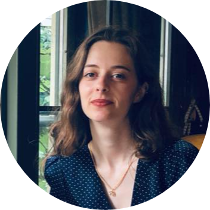

|  | Zeynep İlayda Zafer |
| Adress: | Bıyıklı Mehmet Paşa Sok. 32/3 Etiler İstanbul |
| E-mail: | ilaydazafer@gmail.com |
| Phone: | +905367825218 |
| Boğaziçi University | Western Languages & Literatures. GPA:3.65 |
| 2011-2016 |
| Utrecht University | Humanities: Erasmus Programme |
| 2014 Feb-Jul |
| İstanbul Üsküdar High School |
| 2007-2011 |
Content CoordinatorKomet Culture and Art ProjectsAugust 2020-Present Istanbul, Turkey |
|
Editorial ManagerMen's Health Turkey &Runner's World Turkey November 2017-May 2019 Istanbul, Turkey |
|
Web Content EditorThe Oil & Gas YearAugust 2016-July 2017 Istanbul, Turkey |
|
Gallery AssistantPilevneli GalleryFebruary 2016-August 2016 Istanbul, Turkey |
|
| Editing & Proofreading | ⭐⭐⭐⭐⭐ |
| Microsoft Office | ⭐⭐⭐⭐ |
| Adobe InDesign | ⭐⭐⭐ |
| CMS | ⭐⭐⭐ |
| HTML | ⭐⭐ |
| Turkish | Native |
| English | Advanced |
| French | Intermediate |